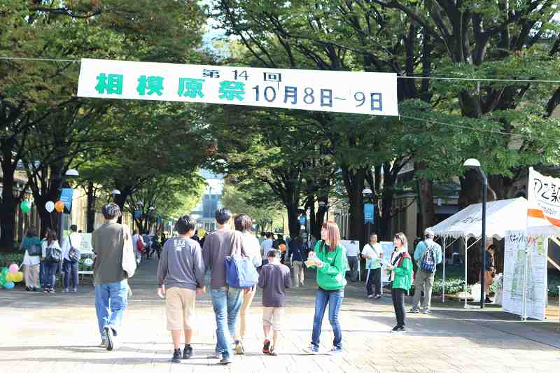
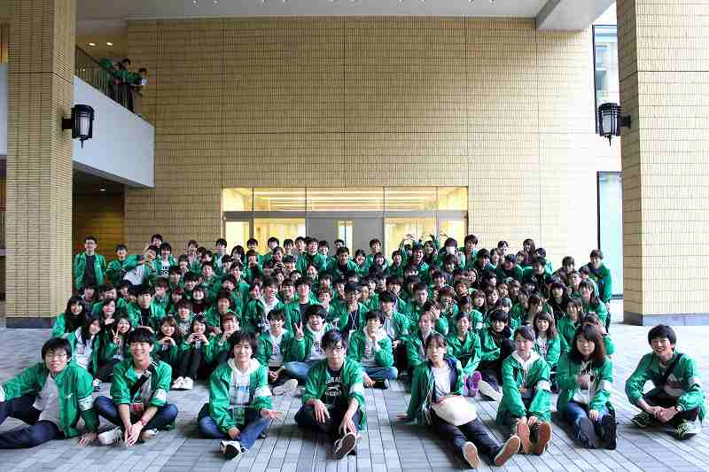

相模原祭とは、毎年10月に
青山学院大学の相模原キャンパスで開催される大学祭です。

相模原キャンパスは2003年に開設されたキャンパスで、広大な敷地や芝生があり、とても綺麗で魅力的なキャンパスです。相模原祭の開催期間中はアリーナでのパフォーマンスや芸能人によるトークショー、ステージではライブが行われ、高層階最上階ではビューラウンジからキャンパス全体を見渡すことができ、広々とした芝生で気持ち良く遊ぶ事もできます。
相模原祭は毎年地元の方々が多くご来場いただき、小さなお子様からお年寄りまで幅広い層から親しまれるような企画がたくさんあります。
そして一番の特徴と言えるのが、「環境を意識した学園祭」であるということです。様々な学園祭の評価を行っている団体から「エコ部門」で入賞を頂くなど、自他共に認めるものとなっています。徹底したゴミの分別や、環境について力を入れている企画を経験することで、学園祭を楽しみながら環境について学ぶことができる、充実した学園祭となっています。
今年度の相模原祭は、開催15周年を迎えます！今までの相模原祭で築き上げたものを大切にしたうえで、15周年という節目を新たな心意気で取り組もうという思いから、「繋がり」「リスタート」の意味を込め、第15回相模原祭テーマを「0」に決定いたしました。日時は
10/7(土),10/8(日)
です！ぜひお越しください！

Copyright © 2017 若林 徹 All Rights Reserved.